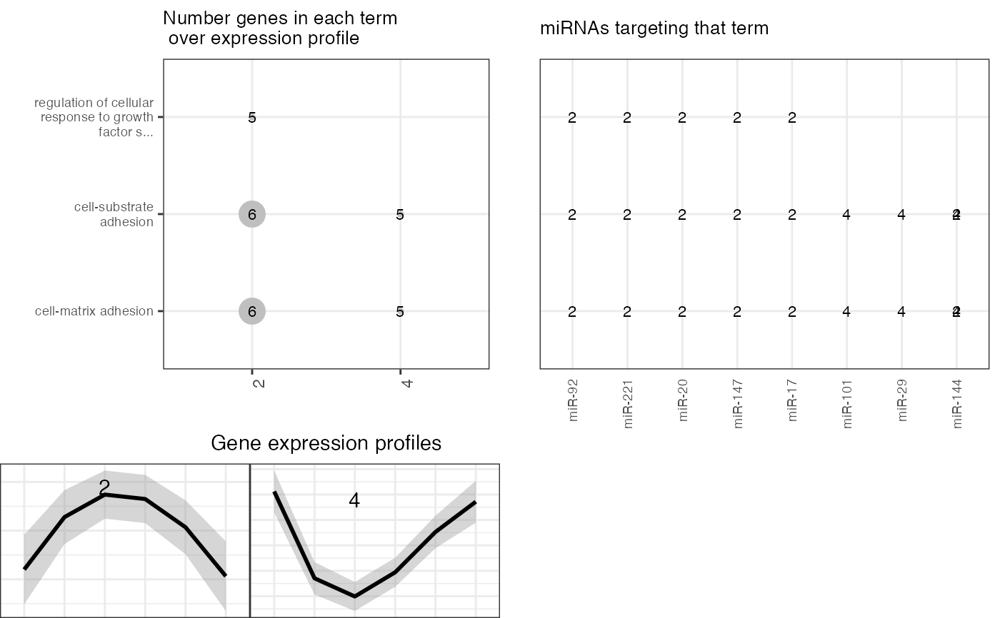

This function will correlate miRNA and gene expression data using
a specific metadata variable to group samples and detect pattern
of expression that will be annotated with GO terms.
mirna_rse and gene_rse can be created using the following code:
#> Number of mirnas 20 with these columns:A201_Day0A200_Day0A196_Day0A167_Day1A165_Day1A63_Day1A172_Day2A70_Day2A69_Day2A178_Day3A75_Day3A74_Day3A181_Day7A180_Day7A80_Day7A189_Day14A85_Day14A84_Day14
#> Number of genes 25 with these columns:control_1control_2control_3day1_1day1_2day1_3day2_1day2_2day2_3day3_1day3_2day3_3day7_1day7_2day7_3day14_1day14_2day14_3
#> Number of mirnas 20 with these columns:controlday1day2day3day7day14
#> Number of mirnas 25 with these columns:controlday1day2day3day7day14
#> Dimmension of cor matrix: 20 25
#> Working with 18 genes.
#> Working with 18 genes after filtering: minc > 0
#> Joining, by = "merge"
#> Joining, by = "merge"
#> cell-matrix adhesion
#> cell-substrate adhesion
#> regulation of cell-substrate adhesion
#> regulation of cell-matrix adhesion
#> positive regulation of cell-substrate adhesion
#> cell-substrate junction assembly
#> regulation of focal adhesion assembly
#> regulation of cell-substrate junction assembly
#> regulation of adherens junction organization
#> positive regulation of cell adhesion
#> cell-substrate adherens junction assembly
#> focal adhesion assembly
#> regulation of cell junction assembly
#> adherens junction assembly
#> positive regulation of cell-matrix adhesion
#> adherens junction organization
#> cell junction assembly
#> cell junction organization
#> cell-cell junction organization
#> regulation of ERK1 and ERK2 cascade
#> ERK1 and ERK2 cascade
#> epithelial cell proliferation
#> regulation of cellular response to growth factor stimulus
#> positive regulation of focal adhesion assembly
#> positive regulation of adherens junction organization
#> angiogenesis
#> positive regulation of cell junction assembly
#> substrate adhesion-dependent cell spreading
#> positive regulation of ERK1 and ERK2 cascade
#> extracellular matrix organization
#> extracellular structure organization
#> wound healing
#> endothelial cell proliferation
#> positive regulation of cell projection organization
#> regulation of protein secretion
#> response to wounding
#> positive regulation of vascular endothelial growth factor receptor signaling pathway
#> positive regulation of cell migration
#> positive regulation of cell motility
#> regulation of peptide secretion
#> negative regulation of wound healing
#> positive regulation of cellular component movement
#> regulation of actin cytoskeleton organization
#> positive regulation of locomotion
#> positive regulation of neuron projection development
#> negative regulation of response to wounding
#> regulation of epithelial cell proliferation
#> regulation of actin filament-based process
#> regulation of hematopoietic progenitor cell differentiation
#> integrin-mediated signaling pathway
#> regulation of cell-cell adhesion
#> regulation of vascular endothelial growth factor receptor signaling pathway
#> negative regulation of endothelial cell apoptotic process
#> positive regulation of neuron differentiation
#> developmental growth involved in morphogenesis
#> endothelium development
#> positive regulation of protein secretion
#> cellular response to vascular endothelial growth factor stimulus
#> regulation of cytoskeleton organization
#> blood circulation
#> circulatory system process
#> regulation of cell morphogenesis
#> positive regulation of MAPK cascade
#> positive regulation of cellular component biogenesis
#> skeletal system development
#> positive regulation of peptide secretion
#> regulation of homeostatic process
#> regulation of wound healing
#> renal system development
#> vascular endothelial growth factor receptor signaling pathway
#> positive regulation of angiogenesis
#> regulation of cell morphogenesis involved in differentiation
#> negative regulation of epithelial cell apoptotic process
#> regulation of endothelial cell apoptotic process
#> negative regulation of blood coagulation
#> negative regulation of hemostasis
#> peptidyl-tyrosine phosphorylation
#> peptidyl-tyrosine modification
#> negative regulation of coagulation
#> endothelial cell apoptotic process
#> positive regulation of vasculature development
#> positive regulation of cell morphogenesis involved in differentiation
#> negative regulation of cell-substrate adhesion
#> regulation of body fluid levels
#> urogenital system development
#> ameboidal-type cell migration
#> regulation of cytokine secretion
#> regulation of response to wounding
#> anatomical structure homeostasis
#> blood coagulation
#> hemostasis
#> regulation of epithelial cell migration
#> coagulation
#> response to follicle-stimulating hormone
#> epithelial tube morphogenesis
#> cytokine secretion
#> response to hypoxia
#> positive regulation of endothelial cell migration
#> post-embryonic camera-type eye development
#> response to decreased oxygen levels
#> sprouting angiogenesis
#> tissue homeostasis
#> positive regulation of secretion by cell
#> regulation of epithelial cell apoptotic process
#> tube morphogenesis
#> surfactant homeostasis
#> negative regulation of substrate adhesion-dependent cell spreading
#> regulation of vasculogenesis
#> positive regulation of cell-cell adhesion
#> developmental cell growth
#> cellular response to gonadotropin stimulus
#> positive regulation of endothelial cell chemotaxis
#> positive regulation of axonogenesis
#> positive regulation of secretion
#> response to gonadotropin
#> calcium-mediated signaling using intracellular calcium source
#> chemical homeostasis within a tissue
#> regulation of blood coagulation
#> regulation of hemostasis
#> epithelial cell migration
#> regulation of angiogenesis
#> epithelium migration
#> vasculogenesis
#> skeletal system morphogenesis
#> tissue migration
#> regulation of coagulation
#> response to oxygen levels
#> negative regulation of cell adhesion
#> positive regulation of hydrolase activity
#> negative regulation of extrinsic apoptotic signaling pathway
#> regulation of endothelial cell proliferation
#> epithelial cell apoptotic process
#> regulation of endothelial cell chemotaxis
#> regulation of vasculature development
#> endothelial cell differentiation
#> kidney development
#> positive regulation of protein transport
#> retinal ganglion cell axon guidance
#> fibrinolysis
#> regulation of extent of cell growth
#> negative regulation of response to external stimulus
#> post-embryonic animal organ development
#> positive regulation of epithelial cell migration
#> vascular endothelial growth factor signaling pathway
#> phosphatidylinositol 3-kinase signaling
#> positive regulation of cytokine secretion
#> regulation of GTPase activity
#> regulation of endothelial cell migration
#> plasminogen activation
#> leukocyte migration
#> positive regulation of positive chemotaxis
#> positive regulation of chemotaxis
#> smooth muscle tissue development
#> regulation of positive chemotaxis
#> trabecula formation
#> peptidyl-serine phosphorylation
#> lymph vessel development
#> monocyte differentiation
#> embryonic hemopoiesis
#> endothelial cell chemotaxis
#> mononuclear cell differentiation
#> regulation of cell shape
#> phosphatidylinositol-mediated signaling
#> nephron development
#> negative regulation of cell development
#> protein kinase C signaling
#> multicellular organismal homeostasis
#> inositol lipid-mediated signaling
#> peptidyl-serine modification
#> negative regulation of cell-matrix adhesion
#> positive regulation of interleukin-10 production
#> regulation of peptidyl-serine phosphorylation
#> ephrin receptor signaling pathway
#> regulation of cellular component size
#> calcium-mediated signaling
#> hematopoietic progenitor cell differentiation
#> regulation of endothelial cell differentiation
#> endothelial cell migration
#> cell migration involved in sprouting angiogenesis
#> positive regulation of mesenchymal cell proliferation
#> positive regulation of cytokine production involved in immune response
#> myeloid cell homeostasis
#> neuron projection extension
#> regulation of hemopoiesis
#> neuron death
#> regulation of extrinsic apoptotic signaling pathway
#> regulation of axonogenesis
#> neural crest cell migration
#> branching involved in blood vessel morphogenesis
#> positive chemotaxis
#> regulation of cell size
#> ossification
#> positive regulation of cell growth
#> regulation of cell growth
#> regulation of chemotaxis
#> regulation of mesenchymal cell proliferation
#> branching morphogenesis of an epithelial tube
#> zymogen activation
#> regulation of chondrocyte differentiation
#> mesenchymal cell differentiation
#> regulation of interleukin-10 production
#> regulation of substrate adhesion-dependent cell spreading
#> vascular process in circulatory system
#> cell adhesion mediated by integrin
#> positive regulation of axon extension
#> positive regulation of developmental growth
#> positive regulation of cytoskeleton organization
#> stem cell differentiation
#> muscle tissue development
#> interleukin-10 production
#> regulation of organ morphogenesis
#> negative regulation of cytokine secretion
#> trabecula morphogenesis
#> axon development
#> peptidyl-tyrosine autophosphorylation
#> mesenchymal cell proliferation
#> positive regulation of smooth muscle cell migration
#> regulation of peptide hormone secretion
#> negative regulation of apoptotic signaling pathway
#> second-messenger-mediated signaling
#> lung development
#> morphogenesis of a branching epithelium
#> peptide cross-linking
#> lung alveolus development
#> respiratory tube development
#> negative regulation of neuron death
#> regulation of blood circulation
#> embryonic organ development
#> regulation of ossification
#> extrinsic apoptotic signaling pathway
#> regulation of cytokine production involved in immune response
#> regulation of cartilage development
#> regulation of peptidyl-tyrosine phosphorylation
#> regulation of cardiac muscle contraction
#> morphogenesis of a branching structure
#> ovarian follicle development
#> neural crest cell development
#> positive regulation of phosphatidylinositol 3-kinase signaling
#> mesenchyme development
#> positive regulation of fibroblast proliferation
#> muscle fiber development
#> smooth muscle cell differentiation
#> positive regulation of endothelial cell proliferation
#> artery morphogenesis
#> ureteric bud morphogenesis
#> protein autophosphorylation
#> reactive oxygen species metabolic process
#> mesonephric tubule morphogenesis
#> respiratory system development
#> mesenchymal cell development
#> stem cell development
#> cellular response to interleukin-1
#> cell chemotaxis
#> neural crest cell differentiation
#> peptide hormone secretion
#> positive regulation of response to external stimulus
#> cytokine production involved in immune response
#> regulation of striated muscle contraction
#> nephron tubule morphogenesis
#> blood vessel endothelial cell migration
#> regulation of calcium-mediated signaling
#> nephron epithelium morphogenesis
#> positive regulation of production of molecular mediator of immune response
#> regulation of smooth muscle cell migration
#> nephron morphogenesis
#> negative regulation of cell morphogenesis involved in differentiation
#> positive regulation of blood circulation
#> response to retinoic acid
#> regulation of hormone secretion
#> gliogenesis
#> renal tubule morphogenesis
#> positive regulation of growth
#> metanephros development
#> regulation of phosphatidylinositol 3-kinase signaling
#> smooth muscle cell migration
#> response to interleukin-1
#> cellular response to hypoxia
#> actin cytoskeleton reorganization
#> positive regulation of protein kinase B signaling
#> sensory organ morphogenesis
#> homeostasis of number of cells
#> platelet activation
#> cellular response to decreased oxygen levels
#> ovulation cycle process
#> regulation of axon extension
#> membrane depolarization
#> kidney morphogenesis
#> nephron tubule development
#> chondrocyte differentiation
#> artery development
#> cellular response to oxygen levels
#> muscle cell migration
#> positive regulation of ossification
#> ovulation cycle
#> renal tubule development
#> ureteric bud development
#> mesonephric epithelium development
#> mesonephric tubule development
#> regulation of fibroblast proliferation
#> mesonephros development
#> fibroblast proliferation
#> odontogenesis
#> nephron epithelium development
#> positive regulation of transmembrane receptor protein serine/threonine kinase signaling pathway
#> hormone secretion
#> regulation of neuron death
#> transmembrane receptor protein serine/threonine kinase signaling pathway
#> female gonad development
#> positive regulation of peptide hormone secretion
#> response to acid chemical
#> hormone transport
#> positive regulation of peptidyl-serine phosphorylation
#> development of primary female sexual characteristics
#> regulation of calcium ion import
#> regulation of morphogenesis of an epithelium
#> regulation of developmental growth
#> regulation of receptor activity
#> erythrocyte differentiation
#> axon extension
#> cardiac muscle contraction
#> cellular response to glucose stimulus
#> adaptive immune response
#> regulation of production of molecular mediator of immune response
#> cellular response to hexose stimulus
#> memory
#> digestive tract development
#> cellular response to monosaccharide stimulus
#> regulation of protein complex assembly
#> positive regulation of cytokine production
#> erythrocyte homeostasis
#> cellular response to carbohydrate stimulus
#> negative regulation of cellular response to growth factor stimulus
#> regulation of membrane potential
#> calcium ion transport
#> negative regulation of protein secretion
#> camera-type eye morphogenesis
#> regulation of apoptotic signaling pathway
#> negative regulation of epithelial cell proliferation
#> cellular glucose homeostasis
#> regulation of epithelial cell differentiation
#> digestive system development
#> stem cell proliferation
#> post-embryonic development
#> regulation of protein kinase B signaling
#> negative regulation of peptide secretion
#> regulation of osteoblast differentiation
#> kidney epithelium development
#> nail development
#> cardiac muscle fiber development
#> primitive hemopoiesis
#> vascular smooth muscle cell development
#> regulation of interleukin-2 secretion
#> negative regulation of protein localization to cell surface
#> negative regulation of protein phosphorylation
#> cytosolic calcium ion transport
#> female sex differentiation
#> cellular calcium ion homeostasis
#> regulation of muscle contraction
#> muscle cell differentiation
#> positive regulation of stress-activated MAPK cascade
#> positive regulation of hormone secretion
#> positive regulation of stress-activated protein kinase signaling cascade
#> neutrophil apoptotic process
#> blood vessel endothelial cell proliferation involved in sprouting angiogenesis
#> regulation of skeletal muscle contraction
#> positive regulation of heterotypic cell-cell adhesion
#> post-embryonic animal organ morphogenesis
#> positive regulation of collateral sprouting
#> venous blood vessel morphogenesis
#> positive regulation of mitochondrial depolarization
#> bone trabecula formation
#> response to forskolin
#> cellular response to forskolin
#> negative regulation of neuron migration
#> transforming growth factor beta receptor signaling pathway
#> axonogenesis
#> positive regulation of kinase activity
#> calcium ion homeostasis
#> dendrite morphogenesis
#> regulation of microtubule cytoskeleton organization
#> endocardium development
#> positive regulation of odontogenesis
#> response to mercury ion
#> retina vasculature morphogenesis in camera-type eye
#> regulation of transcription from RNA polymerase II promoter in response to hypoxia
#> interleukin-2 secretion
#> regulation of cellular response to vascular endothelial growth factor stimulus
#> divalent metal ion transport
#> cellular divalent inorganic cation homeostasis
#> divalent inorganic cation transport
#> striated muscle contraction
#> reproductive structure development
#> regulation of tube diameter
#> regulation of blood vessel diameter
#> response to glucose
#> reproductive system development
#> signal release
#> mast cell chemotaxis
#> negative regulation of keratinocyte proliferation
#> regulation of cardiac muscle contraction by calcium ion signaling
#> cranial nerve structural organization
#> hepatocyte growth factor receptor signaling pathway
#> regulation of neurotransmitter uptake
#> establishment of blood-brain barrier
#> regulation of cellular response to hypoxia
#> positive regulation of membrane depolarization
#> response to hexose
#> negative regulation of phosphorylation
#> response to monosaccharide
#> cell-cell adhesion via plasma-membrane adhesion molecules
